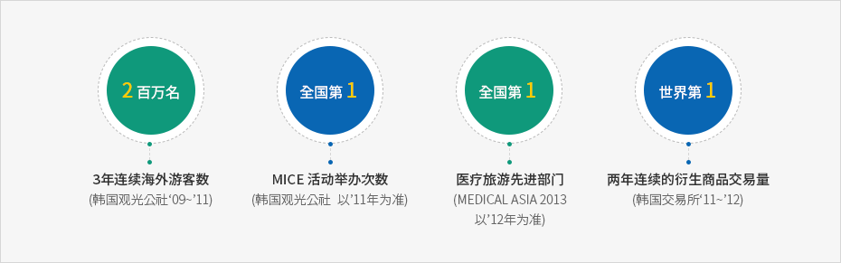

知识型服务产业的基础设施
- Home
- 战略产业
- 知识型服务产业的基础设施
概要
釜山是亚洲第一电影、影像城市，也是代表韩国的旅游城市，及邻接世界第一造船厂的优化金融中心，釜山以服务产业为下一代增长动力，在引资方面起到重要作用，目前正集中力量正在建设服务产业基础设施。


3年连续海外游客数 2百万名 (韩国观光公社‘09~’11),
MICE 活动举办次数 全国第1(韩国观光公社 以’11年为准),
医疗旅游先进部门 全国第1(MEDICAL ASIA 2013 以’12年为准),
两年连续的衍生商品交易量 世界第1(韩国交易所‘11~’12)

培育产业
海洋、衍生优化金融及电影·影像制作的中心
营造船舶、优化金融中心
- 推进釜山国际金融中心综合开发第二阶段事业(2014年~2017年)：总面积182,000平方米，地上36层/49层(两栋楼)、工作设施(办公楼等)、住宿设施(酒店)、销售设施
- 培育全球金融人力：运营国际金融进修院、推进设立金融专门研究生院
建立电影、影像基础设施
- 建立全球综合电影制片厂(2013年~2017年)：达阴山一带776,000平方米
- 设立亚洲电影学校：增设电影制片厂(地上3层~4层)、1,700平方米(2015年8月)
- 在Centum City设立影像产业中心(2010年~2016年)：建立釜山电影体验博物馆(2008年~2016年)
- 运营1,000亿韩元规模的电影策划、开发、制作支援基金
- 向电影(电视剧)剧组提供住宿、支援开发电影策划、制作和拍摄、运营影像风险中心
飞跃发展注入活力的文化内容产业
搞活文化内容产业
- 形成地区SW融合集群并设立内容融合研发中心(2014年~2018年)
- 支持釜山内容韩国实验室(ICT融合型创业、创作)
- 建设移动游戏中心(2015年)
- 扶持挖掘文化内容明星项目
提升旅游、会展城市釜山的地位
搞活游轮海洋旅游及医疗旅游
- 新建国际游轮釜山共同母港、召开釜山国际游轮博览会(2015年)
- 开发并运营沿岸游轮旅游商品：龙湖湾游轮航运(从2014年10月起，3艘)
- 邀请海外医疗旅游相关人员的旅游考察团、医疗旅游翻译义工(14种语言、370名)
- 建立滞留型医疗旅游集群(2014年~2018年)
MICE产业的先进化
- 开发BEXCO配套设施用地(2013年~2017年)：会展设施、酒店（住宿）设施等，14万平方米(地下6层/地上37层)
扩大具备全球竞争力的旅游基础设施
- 营造东釜山旅游园区(2015年~2017年)：吸引投资(与面积相比60%)，整理场地后竣工(2015年)
- 海云台旅游度假村(2006年~2018年)：101层规模
- 营造釜山绿色铁路(2014年~2017年)：旧东海南部线(9.8㎞，现在未投入运营)散步路、自行车路等
- 荒岭山瞭望塔(2014年~2017年)：1,000㎡
-
 电影《国际市场》拍摄现场
电影《国际市场》拍摄现场 -
 搞活邮轮海洋旅游
搞活邮轮海洋旅游 -
 提升MIC产业
提升MIC产业